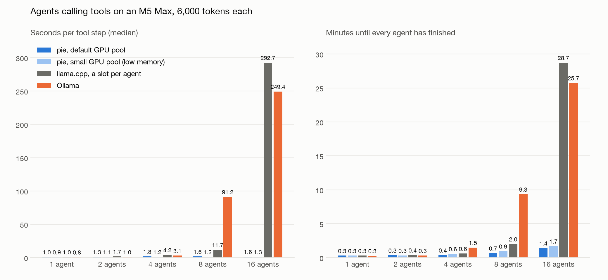
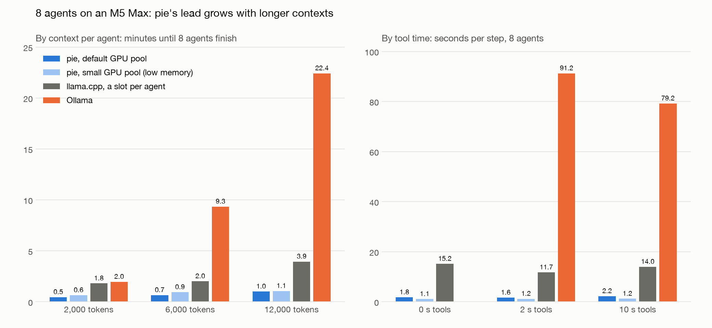

An "army of agents": many agents share one local model. Each agent has its own long context (task, files, history) and spends most of its time waiting on tools such as search, compile, tests or an API.
One agent's loop:
Two things matter: how long an agent waits for its next step, and how long the whole army takes to finish. Raw decode speed hardly matters, because each step generates only a few tokens.
To continue an agent, the engine needs that agent's KV cache: the model's memory of everything the agent has read. On the 27B model, a 6,000-token context takes about 0.8 GB of KV (llama.cpp's figure).
A laptop cannot keep every agent's KV on the GPU, so engines take turns between agents. When an engine switches to an agent whose KV it no longer holds, it rebuilds that KV by re-reading the agent's whole context: 12–15 s for 6,000 tokens on this model, just to add 120 new tokens.
That re-read is the multiplexing penalty. It grows with each property of the workload:
| More of | The penalty grows because |
|---|---|
| Agents | More agents compete for the same memory, so more switches miss, and agents queue behind each other's re-reads. |
| Context per agent | Every miss re-reads the whole context, so 12k tokens costs twice what 6k does. |
| Tool calls | Every call is a switch: the agent leaves while its tool runs and comes back later. |
Ollama 0.35, the default for most laptop users:
llama.cpp (llama-server, the engine inside Ollama), tuned by hand:
-np N gives each agent its own slot, so agents run in parallel and keep their KV between steps.MLX was not measured for this workload.
pie runs each agent as a program inside the engine, with its own KV.
Branch feat/idle-agent-eviction, two commits on current main:
runtime: a process waiting on its client is evicted first and restores when it wakes| Change | Why it is needed |
|---|---|
| A program waiting for a message is marked idle while it waits. | Otherwise the engine cannot tell an agent waiting on a tool from one in the middle of a step. |
| Idle programs are evicted first, whatever their age. | Stock pie only evicts programs younger than the one waiting. An older idle agent holds its memory forever, and the run stalls: on main, 4 agents in this loop made no progress for over 10 minutes. |
| An idle eviction does not queue a restore until the program wakes. | Otherwise pie would restore an agent that is still waiting on its tool, only to evict it again. |
| Waking queues the restore ahead of the program's next step. | The KV is back by the time the agent needs it. |
runtime: pages an idle process holds do not count as kv pressure at admission| Change | Why it is needed |
|---|---|
| Pages held by idle agents count as free when the gateway decides whether to admit a new launch. | The gateway holds a launch while the GPU pool is over about 94% full and waits for room. Only an eviction makes room, and with every agent idle nothing asks for one. With small contexts, or a large pool, pie froze while launching agents (seen at 8 agents × 2,000 tokens and 16 agents × 6,000 tokens). Both runs now complete. |
Size: 2 files, about 130 lines, with one planner test. Runtime tests (41), clippy and fmt pass.
The idea started on test/agent-kv-residency. That branch also carries an admission queue, host-RAM KV swap and prefix-cache work. Main has since gained its own SSD spill for KV, so only the idle-eviction part was ported, and the hang above was found and fixed along the way.
Setup: - M5 Max with 48 GB, Qwen3.8-27B 4-bit, greedy decoding. - Each agent holds 6,000 tokens and makes 6 tool calls; each tool takes 2 s. - All agents loop at once.
pie is shown in two configurations, both measured on this Mac:
| GPU pool for agents' memory | What it represents | |
|---|---|---|
| pie, default pool | Sized automatically from free GPU memory. It holds several agents, so parking starts only at around 8 agents. | This M5 Max as it ships. The main result. |
| pie, small pool | 8,192 tokens, one agent's worth, so pie parks agents on SSD on almost every step. | A Mac where the model's weights leave little room for agents' memory, for example a 24 GB Mac running this 27B model. |
The small pool shows how pie degrades when memory is short. The competitors were not squeezed the same way, so that column is not a like-for-like contest with them.
Each row is one run. For the small pool, the 8- and 16-agent rows are the mean of 3 runs, which agreed within 10%.

Minutes until every agent has finished:
| Agents | pie, default pool | pie, small pool | llama.cpp tuned | Ollama |
|---|---|---|---|---|
| 1 | 0.3 | 0.3 | 0.3 | 0.3 |
| 2 | 0.3 | 0.3 | 0.4 | 0.3 |
| 4 | 0.4 | 0.6 | 0.6 | 1.5 |
| 8 | 0.7 | 0.9 | 2.0 | 9.3 |
| 16 | 1.4 | 1.7 | 28.7 | 25.7 |
Seconds per tool step (median):
| Agents | pie, default pool | pie, small pool | llama.cpp tuned | Ollama |
|---|---|---|---|---|
| 1 | 1.0 | 0.9 | 1.0 | 0.8 |
| 2 | 1.3 | 1.1 | 1.7 | 1.0 |
| 4 | 1.8 | 1.2 | 4.2 | 3.1 |
| 8 | 1.6 | 1.2 | 11.7 | 91 |
| 16 | 1.6 | 1.3 | 293 | 249 |
llama.cpp tuned means one slot per agent.
With the default pool, at 16 agents pie finishes 18x sooner than Ollama and 20x sooner than tuned llama.cpp. At 8 agents it is 14x and 3x.
Steps take a little longer with the default pool than with the small one (1.6 against 1.2 s at 8 agents). More agents are on the GPU at once and step together in one batch, so each step carries more work. The total still finishes sooner, because fewer agents wait for a restore.

Minutes until every agent has finished:
| Context per agent | pie, default pool | pie, small pool | llama.cpp tuned | Ollama | pie (default) lead over Ollama | over llama.cpp |
|---|---|---|---|---|---|---|
| 2,000 tokens | 0.5 | 0.6 | 1.8 | 2.0 | 4x | 4x |
| 6,000 tokens | 0.7 | 0.9 | 2.0 | 9.3 | 14x | 3x |
| 12,000 tokens | 1.0 | 1.1 | 3.9 | 22.4 | 22x | 3.9x |
Seconds per tool step (median):
| Tool time | pie, default pool | pie, small pool | llama.cpp tuned | Ollama |
|---|---|---|---|---|
| 0 s | 1.8 | 1.1 | 15.2 | not measured |
| 2 s | 1.6 | 1.2 | 11.7 | 91 |
| 10 s | 2.2 | 1.2 | 14.0 | 79 |
| Setup, 8 agents | Step | Total |
|---|---|---|
| llama.cpp, one slot (Ollama's mode without Ollama) | 68 s | 7.1 min |
| llama.cpp, a slot per agent, 24 GiB prompt cache | 19.5 s | 3.0 min |
| pie, a pool sized by hand for 8 agents (no parking) | 3.4 s | 0.5 min |
| pie, the same hand-sized pool with 16 agents | 3.4 s | 1.2 min |
A pool sized by hand to hold every agent is the fastest pie setup: 0.5 min at 8 agents, against 0.7 with the default pool. pie's automatic sizing leaves room unused on this Mac.
The engines use different 4-bit builds of the model (MLX for pie, GGUF for the others). - Scope. One machine, one dense model. The expert (MoE) model and other Macs were not tested.
cd ~/pie-agents
uv run --project pie/python/client python tools.py pie --agents 8 --config pie-full.toml
uv run --project pie/python/client python tools.py llama --agents 8 --slots 8
uv run --project pie/python/client python tools.py ollama --agents 8
uv run --with matplotlib python plot.py # draws tools.png and tools-sweeps.png
--context, --tool, --steps and --config: pie-full.toml for the default pool, pie.toml for the small pool, pie-16k.toml for the small pool at 12k contexts, and pie-wide.toml for the hand-sized pool.tools.jsonl.feat/idle-agent-eviction build at pie-mpp/target/release/pie.